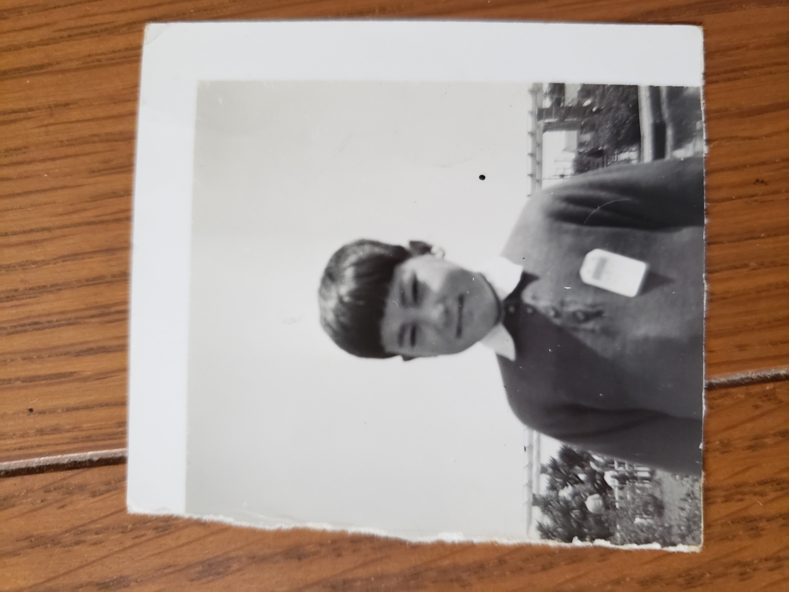
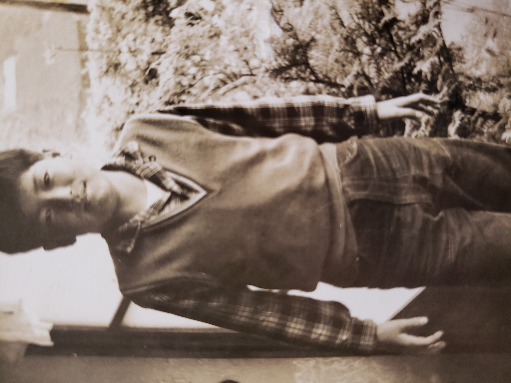
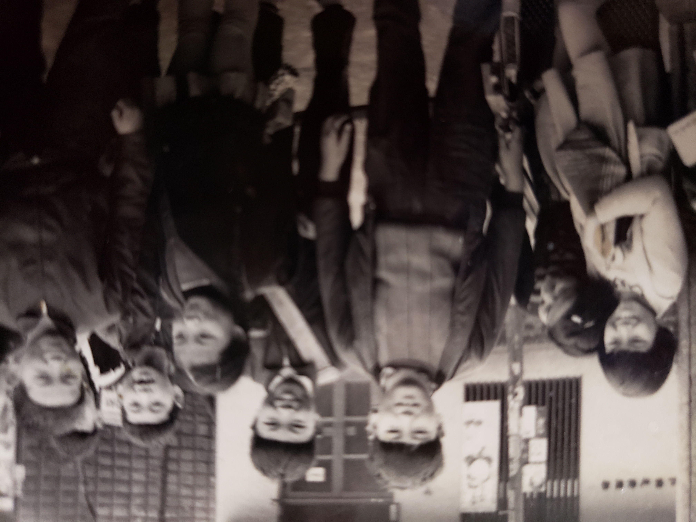
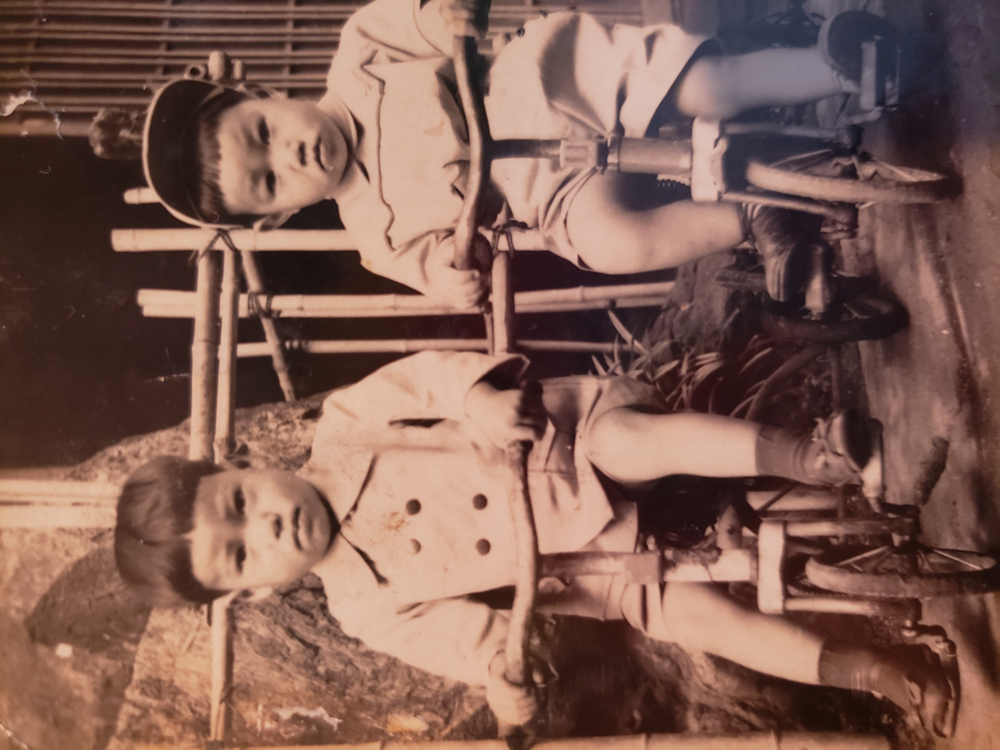

Childhood / 幼い頃
This page keeps childhood memories and old family moments. These photos remind us of simple days, warm smiles, and the beginning of our family story.
このページには、幼い頃の思い出や昔の家族の時間を残しています。 素朴な日々、温かい笑顔、そして家族の物語の始まりを思い出させてくれる写真たちです。



正義感のある兄
